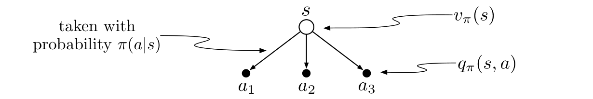
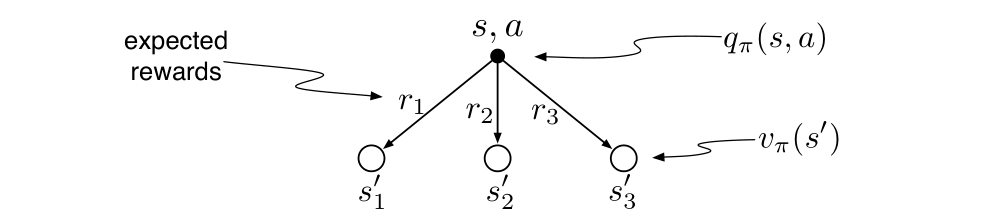
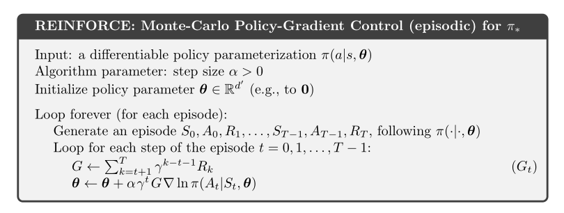
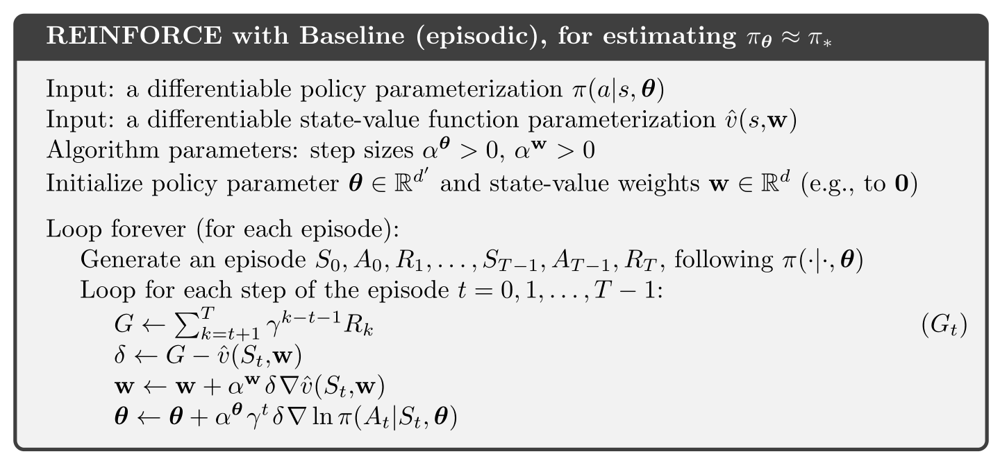
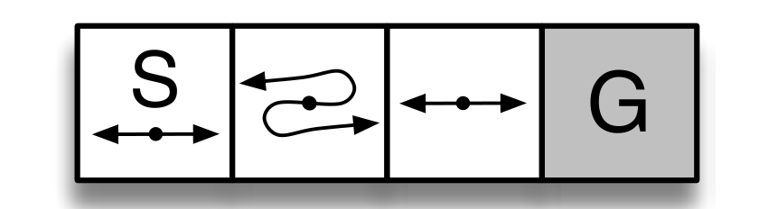
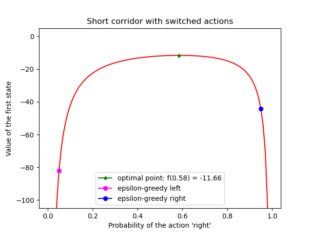
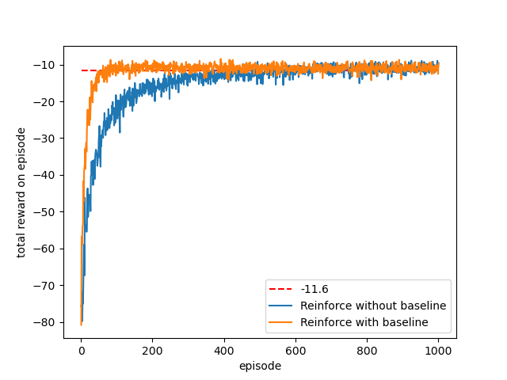
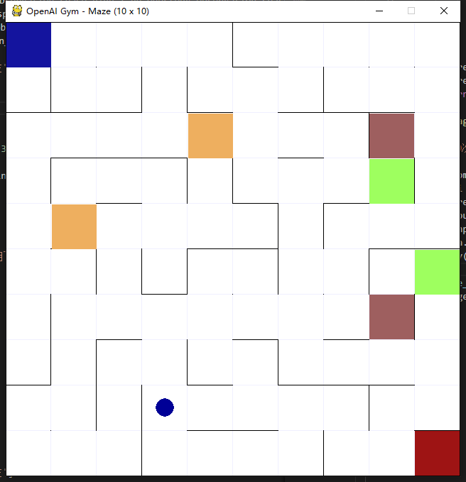

本文是对Sutton的《Reinforcement learning An introduction》书中第13章Policy Gradient Methods部分的总结，主要包括Policy Gradient方法的离散时间情形下的公式推导，REINFORCE算法，REINFORCE with Baseline算法，Short Corridor with switched actions环境下的仿真。
Policy Gradient
和PG算法相对应的是基于action-value的方法，这些方法学习动作的价值然后根据这些价值的大小选择行为，但是对于PG算法来说，直接学习一个参数化的策略，该策略的输入是状态，输出是动作，策略可以直接选择动作而不是依据价值函数进行判断，用\(\theta \in R^d\)来表示策略的参数，可以将需要学习的策略写成：\(\pi(a|s, \theta)=Pr\{A_t=a|S_t=s,\theta_t=\theta\}\)，意思是在t时刻，当agent处于状态\(s\)，选择动作\(a\)的概率，PG算法的目标就是求这个\(\pi(a|s, \theta)\)。
策略参数的学习需要基于某种性能度量\(J(\theta)\)的梯度，PG方法的目标是最大化性能指标，所以它们的更新近似于\(J\)的梯度上升：
\[\boldsymbol{\theta}_{t+1}=\boldsymbol{\theta}_{t}+\alpha \widehat{\nabla J\left(\boldsymbol{\theta}_{t}\right)}\]
其中，\(\widehat{\nabla J\left(\boldsymbol{\theta}_{t}\right)} \in \mathbb{R}^{d}\)是一个随机估计，它的期望是性能指标对它的参数\(\boldsymbol{\theta}_{t}\)的梯度的近似。所有符合这个框架的算法都是策略梯度方法。
Policy Approximation and its Advantages
在策略梯度方法中，策略可以使用任意的方式进行参数化，只要\(\nabla \pi(a \mid s, \boldsymbol{\theta})\)可导，在实际中，为了便于探索，一般要求策略永远不会变成确定的。
如果动作空间是离散的并且不是很大，可以对每一个“状态-动作”二元组估计一个参数化的价值偏好\(h(s, a, \boldsymbol{\theta}) \in \mathbb{R}\)，在每个状态下拥有最大偏好值的动作被选择的概率也最大，例如，可以根据softmax分布将策略描述成
\[\pi(a \mid s, \boldsymbol{\theta}) \doteq \frac{e^{h(s, a, \boldsymbol{\theta})}}{\sum_{b} e^{h(s, b, \boldsymbol{\theta})}}\]
动作偏好值\(h(s, a, \boldsymbol{\theta})\)可以被任意地参数化，例如，可以用神经网络表示，则\(\theta\)就是网络连接权重的向量，或者可以是特征的简单线性组合
\[h(s, a, \boldsymbol{\theta})=\boldsymbol{\theta}^{\top} \mathbf{x}(s, a)\]
根据softmax分布选择动作的一个好处是近似策略可以接近于一个确定策略，因为动作偏好不趋向于任何特定的数值，他们趋向于最优的随机策略，如果最优策略是确定的，则最优动作的偏好值将可能趋向无限大于所有次优的动作。
另一个好处是它可以以任意的概率来选择动作。再有重要函数近似的问题中，最好的近似策略可能是一个随机策略。例如，在非完全信息的纸牌游戏中，最优的策略一般是以特定的概率选择两种不同的玩法。
策略梯度定理的证明：
从上述策略参数更新的方式来看，我们的目的就是算出\(\nabla \widehat{J\left(\boldsymbol{\theta}_{t}\right)}\)，
根据有限马尔科夫链的原理，可以画出下列回溯图：

从而：
\[\nabla v_{\pi}(s)=\nabla\left[\sum_{a} \pi(a \mid s) q_{\pi}(s, a)\right]\]
根据微分的基本运算法则，可得：
\[\nabla v_{\pi}(s)=\sum_{a}\left[\nabla \pi(a \mid s) q_{\pi}(s, a)+\pi(a \mid s) {\color{red}{\nabla q_{\pi}(s, a)}}\right]\]
根据回溯图：

可将\(q_{\pi}(s, a)\)展开：
\[\nabla v_{\pi}(s)=\sum_{a}\left[\nabla \pi(a \mid s) q_{\pi}(s, a)+\pi(a \mid s) {\color{red}{\nabla \sum_{s^{\prime}, r} p\left(s^{\prime}, r \mid s, a\right)\left(r+v_{\pi}\left(s^{\prime}\right)\right)}}\right]\]
又因为在\(t\)时刻，状态\(s\)，动作\(a\)的条件下，\(t+1\)时候状态转换为\(s'\)，获得回报为\(r\)的概率等于在\(t\)时刻，状态\(s\)，动作\(a\)的条件下，\(t+1\)时候状态转换为\(s'\)的概率，且\(r\)对\(\theta\)求导为\(0\)：
\[\sum_{s^{\prime}, r} p\left(s^{\prime}, r \mid s, a\right)\left(r+v_{\pi}\left(s^{\prime}\right)\right) = \sum_{s^{\prime}} p\left(s^{\prime} \mid s, a\right) \nabla v_{\pi}\left(s^{\prime}\right)\]
将之代入上式可得：
\[{\color{red}{\nabla v_{\pi}(s)}}=\sum_{a}\left[\nabla \pi(a \mid s) q_{\pi}(s, a)+\pi(a \mid s) \sum_{s^{\prime}} p\left(s^{\prime} \mid s, a\right) {\color{red}{\nabla v_{\pi}\left(s^{\prime}\right)}}\right]\]
上述是一个递归的形式，可以将\(\nabla v_{\pi}\left(s^{\prime}\right)\)展开，写成：
\[\nabla v_{\pi}\left(s^{\prime}\right)=\left.\sum_{a^{\prime}}\left[\nabla \pi\left(a^{\prime} \mid s^{\prime}\right) q_{\pi}\left(s^{\prime}, a^{\prime}\right)+\pi\left(a^{\prime} \mid s^{\prime}\right) \sum_{s^{\prime \prime}} p\left(s^{\prime \prime} \mid s^{\prime}, a^{\prime}\right) \nabla v_{\pi}\left(s^{\prime \prime}\right)\right]\right]\]
代入上式可得：
\[\nabla v_{\pi}(s)=\sum_{a}\left[\nabla \pi(a \mid s) q_{\pi}(s, a)+\pi(a \mid s) \sum_{s^{\prime}} p\left(s^{\prime} \mid s, a\right)\right.\left.\sum_{a^{\prime}}\left[\nabla \pi\left(a^{\prime} \mid s^{\prime}\right) q_{\pi}\left(s^{\prime}, a^{\prime}\right)+\pi\left(a^{\prime} \mid s^{\prime}\right) \sum_{s^{\prime \prime}} p\left(s^{\prime \prime} \mid s^{\prime}, a^{\prime}\right) \nabla v_{\pi}\left(s^{\prime \prime}\right)\right]\right]\]
考虑一个下面这样的状态访问序列并将从状态\(s\)开始在策略\(\pi\)下经过\(k\)个时间步到达状态\(x\)的概率记为\(\rho^{\pi}(s \rightarrow x, k)\)
\[s \xrightarrow[]{a \sim \pi_\theta(.\vert s)} s’ \xrightarrow[]{a \sim \pi_\theta(.\vert s’)} s’’ \xrightarrow[]{a \sim \pi_\theta(.\vert s’’)} \dots\]
对于不同的\(k\)值，\(\rho^{\pi}(s \rightarrow x, k)\)的值包含以下几种情况：
- 当\(k=0\)时：\(\rho^{\pi}(s \rightarrow s, k=0)=1\)。
- 当\(k=1\)时，遍历在状态\(s\)下所有可能的动作\(a\)，然后将所有从元组\((s, a)\)转移到目标状态的概率累加：\(\rho^{\pi}\left(s \rightarrow s^{\prime}, k=1\right)=\sum_{a} \pi_{\theta}(a | s) P\left(s^{\prime} | s, a\right)\)
- 设目标是从状态\(s\)开始依照策略\(\pi\)经过\(k+1\)个时间步最终达到目标状态\(x\)。为了实现这个目标，可以先从状态\(s\)开始经过\(k\)个时间步后达到某个中间状态\(s'\)（任何一个状态\(s\in\mathcal{S}\)均可成为中间状态），然后经过最后一个时间步到达目标状态\(x\)。这样的话，可以递归的计算访问概率：\(\rho^{\pi}(s \rightarrow x, k+1)=\sum_{s^{\prime}} \rho^{\pi}\left(s \rightarrow s^{\prime}, k\right) \rho^{\pi}\left(s^{\prime} \rightarrow x, 1\right)\)
根据上述所说的三种情况，可以递归的展开\(\nabla V^\pi(s)\)，为了简化符号，进行符号上的替换：\(\phi(s)=\sum_{a \in \mathcal{A}} \nabla_{\theta} \pi_{\theta}(a | s) Q^{\pi}(s, a)\)，在展开的过程中，从状态\(s\)开始经过任意时间步后到达任意的状态，并且将上述过程中的访问概率累加起来就可以得到\(\nabla V^\pi(s)\)：
\[\nabla v^{\pi}(s)\]
\[=\phi(s)+\sum_{a} \pi(a \mid s) \sum_{s^{\prime}} P\left(s^{\prime} \mid s, a\right) \nabla v^{\pi}\left(s^{\prime}\right)\]
\[=\phi(s)+\sum_{s^{\prime}} \sum_{a} \pi_{\theta}(a \mid s) P\left(s^{\prime} \mid s, a\right) \nabla v^{\pi}\left(s^{\prime}\right)\]
\[=\phi(s)+\sum_{s^{\prime}} \rho^{\pi}\left(s \rightarrow s^{\prime}, 1\right) \nabla v^{\pi}\left(s^{\prime}\right)\]
\[=\phi(s)+\sum_{s^{\prime}} \rho^{\pi}\left(s \rightarrow s^{\prime}, 1\right)\left[\phi\left(s^{\prime}\right)+\sum_{s^{\prime \prime}} \rho^{\pi}\left(s^{\prime} \rightarrow s^{\prime \prime}, 1\right) \nabla v^{\pi}\left(s^{\prime \prime}\right)\right]\]
\[=\phi(s)+\sum_{s^{\prime}} \rho^{\pi}\left(s \rightarrow s^{\prime}, 1\right) \phi\left(s^{\prime}\right)+\sum_{s^{\prime \prime}} \rho^{\pi}\left(s \rightarrow s^{\prime \prime}, 2\right) \nabla v^{\pi}\left(s^{\prime \prime}\right)\]
\[=\phi(s)+\sum_{s^{\prime}} \rho^{\pi}\left(s \rightarrow s^{\prime}, 1\right) \phi\left(s^{\prime}\right)+\sum_{s^{\prime \prime}} \rho^{\pi}\left(s \rightarrow s^{\prime \prime}, 2\right) \phi\left(s^{\prime \prime}\right)+\sum_{s^{\prime \prime \prime}} \rho^{\pi}\left(s \rightarrow s^{\prime \prime \prime}, 3\right) \nabla v^{\pi}\left(s^{\prime \prime \prime}\right)\]
\[=\cdots，递归展开\]
\[=\sum_{x \in \mathcal{S}} \sum_{k=0}^{\infty} \rho^{\pi}(s \rightarrow x, k) \phi(x)\]
\[\nabla v_{\pi}(s)=\sum_{x \in \mathcal{S}} \sum_{k=0}^{\infty} \operatorname{Pr}(s \rightarrow x, k, \pi) \sum_{a} \nabla \pi(a \mid x) q_{\pi}(x, a)\]
因此，
\[\nabla J(\boldsymbol{\theta})=\nabla v_{\pi}\left(s_{0}\right)\]
\[=\sum_{s}\left(\sum_{k=0}^{\infty} \operatorname{Pr}\left(s_{0} \rightarrow s, k, \pi\right)\right) \sum_{a} \nabla \pi(a \mid s) q_{\pi}(s, a)\]
\[=\sum_{s} \eta(s) \sum_{a} \nabla \pi(a \mid s) q_{\pi}(s, a)\]
\[=\sum_{s^{\prime}} \eta\left(s^{\prime}\right) \sum_{s} \frac{\eta(s)}{\sum_{s^{\prime}} \eta\left(s^{\prime}\right)} \sum_{a} \nabla \pi(a \mid s) q_{\pi}(s, a)\]
\[=\sum_{s^{\prime}} \eta\left(s^{\prime}\right) \sum_{s} \mu(s) \sum_{a} \nabla \pi(a \mid s) q_{\pi}(s, a)\]
\[\propto \sum_{s} \mu(s) \sum_{a} \nabla \pi(a \mid s) q_{\pi}(s, a)\]
REINFORCE：蒙特卡洛策略梯度
PG算法的随机梯度上升，需要一种获取样本的方法，这些采样的样本梯度的期望正比于性能指标对于策略参数的实际梯度。这些样本只需要正比于实际的梯度即可，因为任何常数的正比系数显然可以被吸收到步长参数\(\alpha\)中，策略梯度定理给出了一个正比于梯度的精确表达式，只需要找到一种采样方法，使得采样样本的梯度近似或者等于这个表达式。注意，策略梯度定理公式的右边是将目标策略\(\pi\)下每个状态出现的频率作为加权系数的求和项，如果按照策略\(\pi\)执行，则状态将按照这个比例出现。因此：
\[\nabla J(\boldsymbol{\theta}) \propto \sum_{s} \mu(s) \sum_{a} q_{\pi}(s, a) \nabla \pi(a \mid s, \boldsymbol{\theta})\]
\[=\mathbb{E}_{\pi}\left[\sum_{a} q_{\pi}\left(S_{t}, a\right) \nabla \pi\left(a \mid S_{t}, \boldsymbol{\theta}\right)\right]\]
因此，PG算法可以写成：
\[\boldsymbol{\theta}_{t+1} \doteq \boldsymbol{\theta}_{t}+\alpha \sum_{a} \hat{q}\left(S_{t}, a, \mathbf{w}\right) \nabla \pi\left(a \mid S_{t}, \boldsymbol{\theta}\right)\]
其中，\(\hat{q}\)是由\(q_{\pi}\)学习得到的的近似，这个算法被称为全部动作算法，因为它的更新涉及了所有可能的动作，再引入\(A_t\)，把对随机变量所有可能取值的求和运算替换为对\(\pi\)的期望，然后对期望进行采样。为了能够写成对\(\pi\)求期望的形式，需要凑出\(\pi\left(a \mid S_{t}, \boldsymbol{\theta}\right)\)作为加权系数的形式，因此，采用一个不改变等价性的方法来引入这个概率加权系数，将每一个求和项分别乘上再除以概率\(\pi\left(a \mid S_{t}, \boldsymbol{\theta}\right)\)就可以了：
继续上述的推导可得：
\[\nabla J(\boldsymbol{\theta})=\mathbb{E}_{\pi}\left[\sum_{a} \pi\left(a \mid S_{t}, \boldsymbol{\theta}\right) q_{\pi}\left(S_{t}, a\right) \frac{\nabla \pi\left(a \mid S_{t}, \boldsymbol{\theta}\right)}{\pi\left(a \mid S_{t}, \boldsymbol{\theta}\right)}\right]\]
\[=\mathbb{E}_{\pi}\left[q_{\pi}\left(S_{t}, A_{t}\right) \frac{\nabla \pi\left(A_{t} \mid S_{t}, \boldsymbol{\theta}\right)}{\pi\left(A_{t} \mid S_{t}, \boldsymbol{\theta}\right)}\right]\]
\[=\mathbb{E}_{\pi}\left[G_{t} \frac{\nabla \pi\left(A_{t} \mid S_{t}, \boldsymbol{\theta}\right)}{\pi\left(A_{t} \mid S_{t}, \boldsymbol{\theta}\right)}\right]\]
括号中的最后一个表达式是可以通过每步的采样计算得到的，它的期望等于真实的梯度。
又因为\(\nabla \ln x=\frac{\nabla x}{x}\)，则
\[\frac{\nabla \pi\left(A_{t} \mid S_{t}, \boldsymbol{\theta}_{t}\right)}{\pi\left(A_{t} \mid S_{t}, \boldsymbol{\theta}_{t}\right)} = \nabla \ln \pi\left(A_{t} \mid S_{t}, \boldsymbol{\theta}_{t}\right)\]
\[\boldsymbol{\theta}_{t+1} \doteq \boldsymbol{\theta}_{t}+\alpha G_{t} \frac{\nabla \pi\left(A_{t} \mid S_{t}, \boldsymbol{\theta}_{t}\right)}{\pi\left(A_{t} \mid S_{t}, \boldsymbol{\theta}_{t}\right)}\]
最终算法的流程图：

作为一个随机梯度方法，REINFORCE有很好的理论收敛保证。每个episode的期望更新和性能指标的真实梯度的方向相同。这可以保证期望意义下的性能指标的改善，只要\(\alpha\)足够小，在标准的随机近似条件下，它可以收敛到局部最优。
但是，作为蒙特卡洛方法，REINFORCE可能有较高的方差，因此导致学习缓慢。
REINFORCE with Baseline
可以将策略梯度定理进行推广，在其中加入任意一个与动作价值函数进行对比的baseline \(b(s)\)：
\[\nabla J(\boldsymbol{\theta}) \propto \sum_{s} \mu(s) \sum_{a}\left(q_{\pi}(s, a)-b(s)\right) \nabla \pi(a \mid s, \boldsymbol{\theta})\]
这个baseline可以是任意函数，甚至是一个随机变量，只要不随着动作\(a\)变化，上式仍然成立，因为：
\[\sum_{a} b(s) \nabla \pi(a \mid s, \boldsymbol{\theta})=b(s) \nabla \sum_{a} \pi(a \mid s, \boldsymbol{\theta})=b(s) \nabla 1=0\]
包含baseline的REINFORCE算法是之前REINFORCE算法的更一般的推广：
\[\boldsymbol{\theta}_{t+1} \doteq \boldsymbol{\theta}_{t}+\alpha\left(G_{t}-b\left(S_{t}\right)\right) \frac{\nabla \pi\left(A_{t} \mid S_{t}, \boldsymbol{\theta}_{t}\right)}{\pi\left(A_{t} \mid S_{t}, \boldsymbol{\theta}_{t}\right)}\]
一般来说，加入这个baseline不会使更新值的期望发生变化，但是对方差有很大的影响，具体需要进一步推导一下。
具体的算法如下：

Short Corridor with switched actions环境下的仿真
环境描述
Short Corridor with switched actions是Sutton书中的一个环境：

有4个状态:[0, 1, 2, 3]，其中，第4个状态：G，是终止状态，在第二个状态：1，动作会反向，例如执行向左的动作，实际会向右。
每个状态下有2个动作，向左或者向右，0表示向左，1表示向右。
每一步的reward是-1。
仿真
1. 解析解
系统模型已知，可以直接求解Bellman方程，
\[v_{\pi}(s) \doteq \mathbb{E}_{\pi}\left[G_{t} \mid S_{t}=s\right]\]
\[=\mathbb{E}_{\pi}\left[R_{t+1}+\gamma G_{t+1} \mid S_{t}=s\right]\]
\[=\sum_{a} \pi(a \mid s) \sum_{s^{\prime}} \sum_{r} p\left(s^{\prime}, r \mid s, a\right)\left[r+\gamma \mathbb{E}_{\pi}\left[G_{t+1} \mid S_{t+1}=s^{\prime}\right]\right]\]
\[=\sum_{a} \pi(a \mid s) \sum_{s^{\prime}, r} p\left(s^{\prime}, r \mid s, a\right)\left[r+\gamma v_{\pi}\left(s^{\prime}\right)\right], \quad \text { for all } s \in \mathcal{S}\]
所以该系统的Bellman方程为：
\[v(s_0)=(1-p)[-1+v(s_0)]+p[-1+v(s_1)]\]
\[v(s_1)=p[-1+v(s_0)]+(1-p)[-1+v(s_2)]\]
\[v(s_2)=p[-1+0]+(1-p)[-1+v(s_1)]\]
解线性方程组可得：\[v(s_0)=\frac{2(p-2)}{p(1-p)}\]

2. 假设环境模型未知（即无法写出Bellman方程）
REINFORCE with and without Baseline

openai gym maze环境下的仿真

暂时还没调试好，训练过程不收敛或者陷入局部最优，训练的过程发现初始参数的设定，学习率\(\alpha\)等参数对训练效果的影响较大，需要进一步进行研究原因。